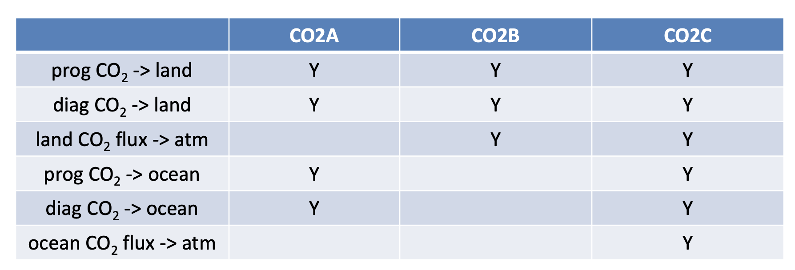
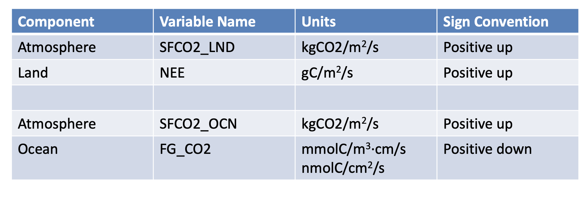

BGC
Contents
BGC#
Biogeochemistry in CESM#
Biogeochemistry features have been available since CESM1.0 and are on by default in CESM2.0.
Three components of CESM have biogeochemistry features:
CAM
\(CO_{2}\) constituents in CAM that use the land and ocean fluxes of \(CO_{2}\) as surface boundary conditions.
CAM passes \(CO_{2}\) to the coupler for land and ocean flux computations.
The \(CO_{2}\) consitutients are coupled with radiation computations.
POP
Includes the MARBL ecosystem library in CESM2.0
CLM
Features covered elsewhere [LINK]
Coupled BGC Compsets#
Terminology
BGC \(CO_{2}\): what is used by surface components
RAD \(CO_{2}\): what is used by the atmospheric radiative code
Diagnostic \(CO_{2}\): prescribed atmospheric \(CO_{2}\) concentrations. (E.g. constant, read from file, 1% ramp, etc.)
Prognostic \(CO_{2}\): predicted atmospheric \(CO_{2}\) concentrations. Atmospheric consitutent is computed from surface \(CO_{2}\) fluxes.
B1850, BHIST
Compset long name has BCG%BDRD
Coupled model, BGC & RAD \(CO_{2}\) are diagnostic
B1850_BPRP, BHIST_BPRP
Shortnames introduced in CESM2.1.1
Compset long name has BGC%BPRP
Coupled model, BGC & RAD \(CO_{2}\) are prognostic
Ocean Specific BGC Compsets#
C1850ECO
Ocean alone, 1850 aerosols, normal year forcing
G1850ECO
Ocean and sea ice, 1850 aerosols, normal year forcing
G1850ECOIAF
Ocean and sea ice, 1850 aerosols, interannually varying forcing
These can be found by using the following command in the same directory as create_newcase
./query_config --compsets pop
BGC Initial Conditions#
Coupled BDRD compsets
BDRD is default RUN_REFCASE set for f09_g17 or f19_g17 resolution experiments
Provided initial conditions were spun-up with f09_g17 resolution model. Note that the carbon cycle is not as well balanced in f19_g17 resolution experiments as it is with f09_g17 resolution.
Coupled BPRP compsets
PBRP is the default RUN_REFCASE set for f09_g17
Ocean alone or Ocean-ice compsets
Initial conditions are provided but are not spun up.
BGC env*xml variables#
CCSM_BGC
Controls which \(CO_{2}\) fields are exchanged between CESM components.

Figure: CCSM_BGC settings.
CO2A: land only or ocean only runs.
CO2B: atmosphere-land runs. Ocean and fossil fuel \(CO_{2}\) fluxes are read for m a file.
CO2C: fully coupled runs.
CCSM_CO2_PPMV
Constant \(CO_{2}\) reference value used in some configurations.
OCN_CO2_TYPE or LND_CO2_TYPE
Controls \(CO_{2}\) used by ocean and land components.
Constant, prognistic, diagnostic.
OCN_TRACER_MODULES
Controls which ocean tracers are used.
Ocean ecosystem model is called ecosys.
BGC units and sign conventions#

Figure: BGC units and sign conventions.
CAM variables CO2, CO2_LND, CO2_OCN, CO2_FF all have units of (kg CO2)/(kg dry air). Note that these are not typical units for carbon cycle modelers. To convert to ppmv multipy by 1.0e6*28.966/44.0 . 28.966 is the molecular weight of dry air and 44.0 is the molecular weight of \(CO_{2}\).
Same quantity in different CESM component output has: different names, different units, different sign conventions (for fluxes).